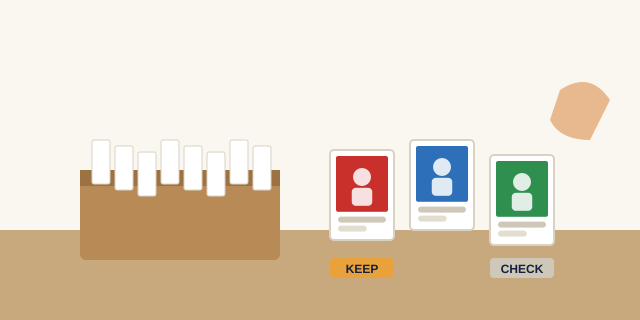

What Are My Sports Cards Worth?
Most old sports cards are worth less than a dollar, but a few in almost every collection are worth much more. The trick is knowing which ones to look at. This page shows you how to spot cards with real value, how to check what they actually sell for, and where to get a free second opinion in Iowa City.
Get a free value check
Step 1: Sort out the cards most likely to have value
Pull these cards aside first. They're the ones collectors pay for:
- Rookie cards: a player's first cards, often marked with an "RC" logo.
- Hall of Famers and current stars: big names sell; role players usually don't.
- Autographs and memorabilia cards: cards with a signature or a piece of jersey.
- Serial-numbered cards: cards stamped with a number like "23/99" are limited and in demand.
- Vintage cards: cards from before about 1980, especially stars in good condition.
Step 2: Identify each card
To look up a price, you need four details, all printed on the card: the year, the brand (the card company and set name), the card number (usually on the back), and the player. Also note anything special, such as a colored border, a shiny finish, or a serial number.
Step 3: Look up recent sold prices
- Search an online marketplace for the year, brand, card number, and player.
- Filter the results to sold or completed listings. Asking prices tell you what sellers hope for; sold prices tell you what buyers actually paid.
- Compare cards in the same condition. A graded 10 and a worn ungraded copy can differ in price by hundreds of times.
- Look at several recent sales and use the middle price, not the highest one.
Step 4: Factor in condition
Two copies of the same card can be worth very different amounts. Check corners, edges, centering, and surface. If a valuable card looks nearly perfect, it may be worth grading, and our sports card grading guide explains when that pays off.
Typical sports card value by card type
Every card is different, but most cards fall into familiar price ranges. These are the ranges we see most often at our counter. Use them as a starting point, then check recent sold prices for your exact card.
Base cards of role players
Ungraded: $0.10 to $0.50
Graded 10: Rarely worth grading
Base cards of current stars
Ungraded: $0.50 to $3
Graded 10: $15 to $60
Base rookie cards of current stars
Ungraded: $2 to $15
Graded 10: $40 to $250
Numbered parallels (for example, /99 or lower)
Ungraded: $10 to $150
Graded 10: $50 to $600
Certified autographs of starters
Ungraded: $15 to $200
Graded 10: $60 to $800
Vintage Hall of Famers (before 1980)
Ungraded: $20 to $500+
Graded 8 or higher: $100 to several thousand
"Junk wax" cards (1987 to 1994)
Ungraded: $0.05 to $1
Graded 10: Only key rookies and errors are worth grading
Ranges are our shop's general estimates and change with player performance, injuries, and market trends. They are not offers to buy or sell.
Get a free card value check in Iowa City
Bring up to 50 cards to our shop during store hours and we'll go through them with you at no charge. We'll point out anything worth more than a few dollars, show you the recent sales we're basing that on, and tell you whether any cards are worth grading. You're never obligated to sell.
Want to sell?
We make cash offers on single cards and full collections, typically 50% to 70% of recent sold prices depending on demand.
Want to keep collecting?
Use what you learn to fill gaps in your collection. Browse our sports cards for sale.